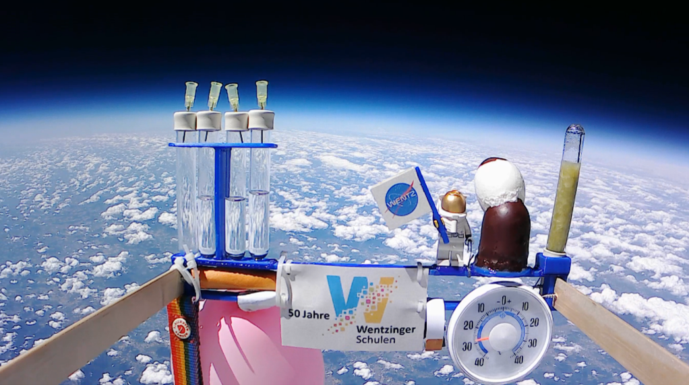
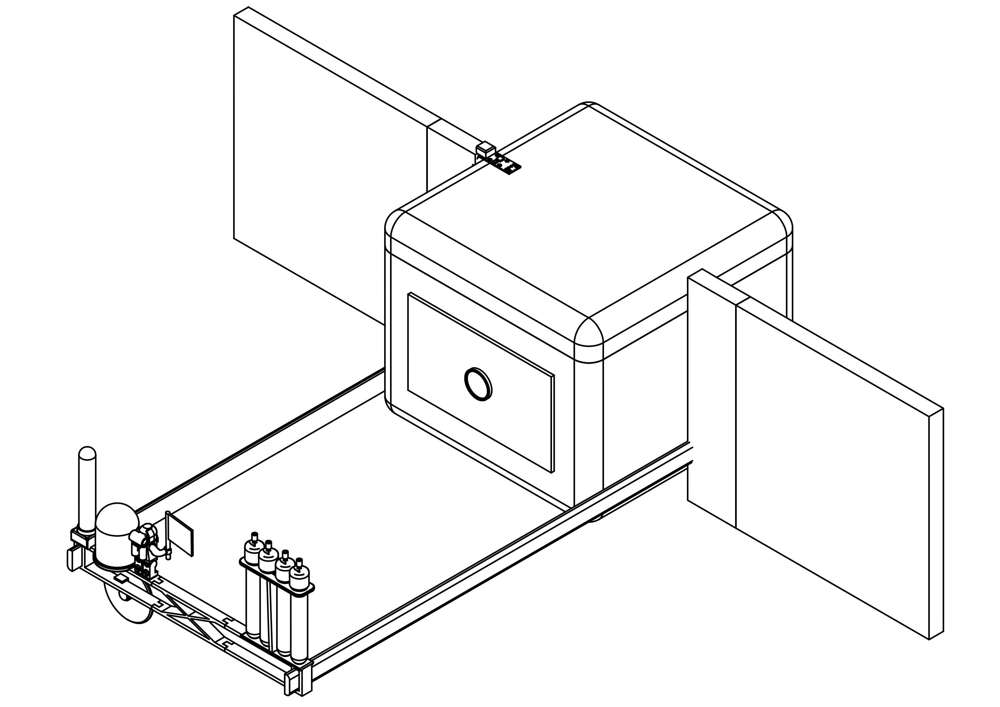
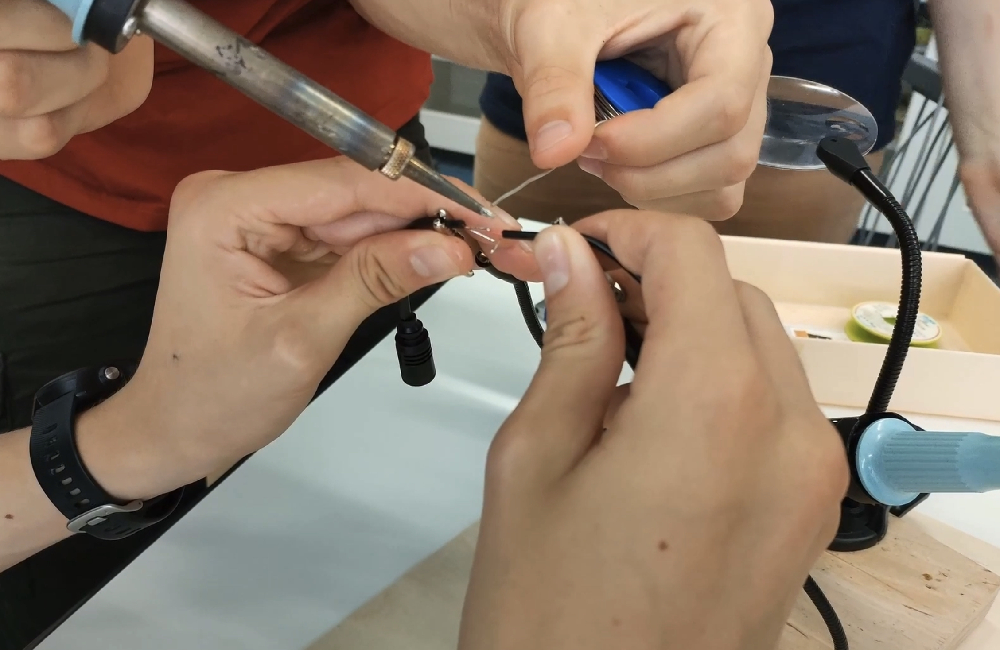
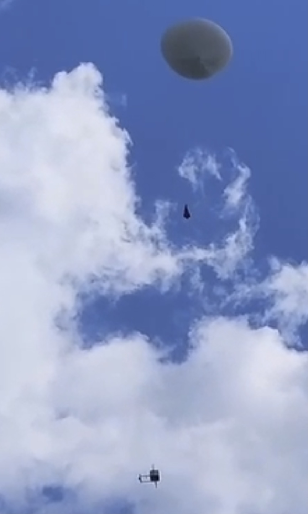
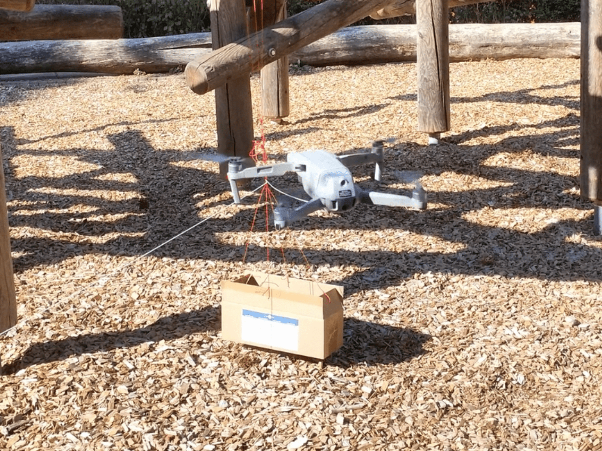
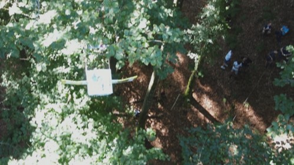
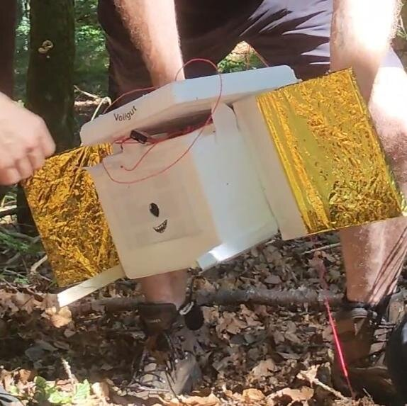

When I was a little kid, I used to dream about being an astronaut. Unlike many others, however, I never quite let go of that dream. So when our school's 50th anniversary was coming up and we were still looking for great projects. Some of us students and teachers came up with the idea of sending a weather balloon with a self-made probe attached to it into the stratosphere. I was immediately hooked on the idea because of my passion for space and engineering.
The idea was to attach our probe to a weather balloon that would fly to an altitude of about 40 000 metres before bursting due to the low air pressure. On its flight, we would record various measurement data and film the flight.
Up into the stratosphere with a weather balloon
How we built our own small space probe and sent it up to the edge of space.
Published: 30.09.2022

Sending your own probe to space is no easy task, but definitely worth it.
Planning out our probe

We started by specifying our goals and designing our Probe
To plan something you first have to set your goals, after some back and forth we agreed to record the following data:
- Temperature (inside and outside the probe)
- Humidity
- GPS
- Air pressure
- different wavelengths
- Ozone
- Camera
- ...and a tracker to locate the probe, when it has landed

After we got all the sensors and connected them to the Arduino, we wrote a script that records the different measuring points and saves them on an SD card. Then we started building the probe. The probe consists of a thick Styrofoam cardboard to keep the electronics warm inside. We also mounted two "wings" on the sides, with the goal of stabilising the flight behaviour of the probe, and attached a bracket to the front of the probe for some experiments. These include various alkanes, chlorophyll, an analogue thermometer and a chocolate marshmallow that will burst at low air pressure. Of course, the "Wentztronaut" was also there, our mascot, a Lego astronaut with our logo. After testing everything again, we started to attach a parachute to our probe so that the probe could land softly after the balloon would burst. Now there was only one step remaining:
Filling our balloon with helium! In order not to damage the balloon, we were only allowed to touch the balloon with gloves during the filling process.
3D model of our Probe
Sending the probe into the stratosphere

Our weather balloon filled with helium
When the balloon was filled with helium, we brought in some spectators and after a countdown we released the balloon and it flew away majestically together with the probe. After we could no longer see the balloon, we had to wait a few hours. We were totally relieved when we finally got news from our tracker. The balloon had landed somewhere in the Black Forest, so we drove there and after a short hike we were at the spot where the balloon had landed. However, this place was not a meadow as we had hoped, but a forest. After some searching, we found our balloon and the probe in a treetop about 25 metres above the ground. The balloon and parachute were tangled on a thick branch at about 27m, while the probe, connected by a string, touched down on a branch at about 22m. We tried to shake the tree, but nothing happened. So we had to go back without the probe and the balloon and think of a plan.
How can we save our probe

We had many different ideas to bring the probe down. It quickly became clear that it was not possible to climb up with the help of a ladder, as the probe was hanging so high up and far away from the trunk that this would be an impossible undertaking. Full of energy, we examined many other possibilities for their advantages and disadvantages until we finally agreed on the following theory:
We would tie a thread to a drone and use it to circle the string, between the balloon and the probe, before flying back again. Then we would pull hard on the thread and our probe would fall down. So I asked one of my friends, who flies drones as a hobby, if he would be willing to help us and he agreed. To test whether this rescue operation would be possible at all, we recreated the Senario in a playground and it actually worked. So, full of hope, we set off again, this time to actually recover the probe with the help of a drone.
Saving our probe

After we had arrived and hiked to the probe again, we tried to shake the tree again and this time the probe actually fell, but unfortunately only one metre, as it was still connected to the balloon and parachute by the string. So we tied a thread to the drone and launched it. We carefully manoeuvred the drone through the forest and the dense canopy. With great excitement, we then circled the string that still connected the probe to the balloon, when the drone suddenly fell down because it hit a branch. We were all still in a state of shock when we realised that the drone had already wrapped the thread around the probe and therefore only fell about five metres before it was stopped by the rope. Slowly, we lowered the drone down the thread, and when the drone was at our height, we detached the thread from it. All together we took the thread in our hands and pulled strongly on it a few times when the probe suddenly came crashing down. Everyone breathed a sigh of relief and we carefully examined our slightly demolished probe.
Recovering our data

Our probe after falling down from the tree
After we had recovered our probe, it was time to analyze the data. From our data, we can see that the probe climbed to an altitude of approximately 120,000 feet before the balloon burst. While the temperature at launch was still 32°C, the minimum temperature inside the probe was around 4°C, while outside the probe it was -39.2°C. Our probe reached a top speed of 95.7 km/h while falling. The interesting things, however, were the GPS track that we recorded and the video that we were able to capture.
The Video-Footage we captured
The GPS-Track we recorded